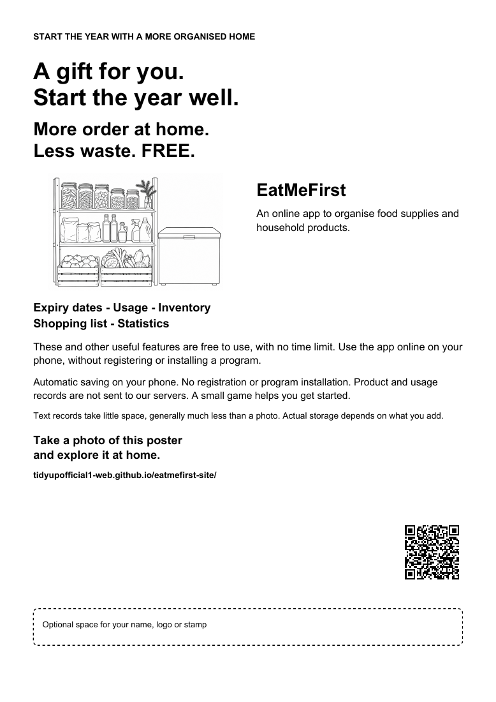
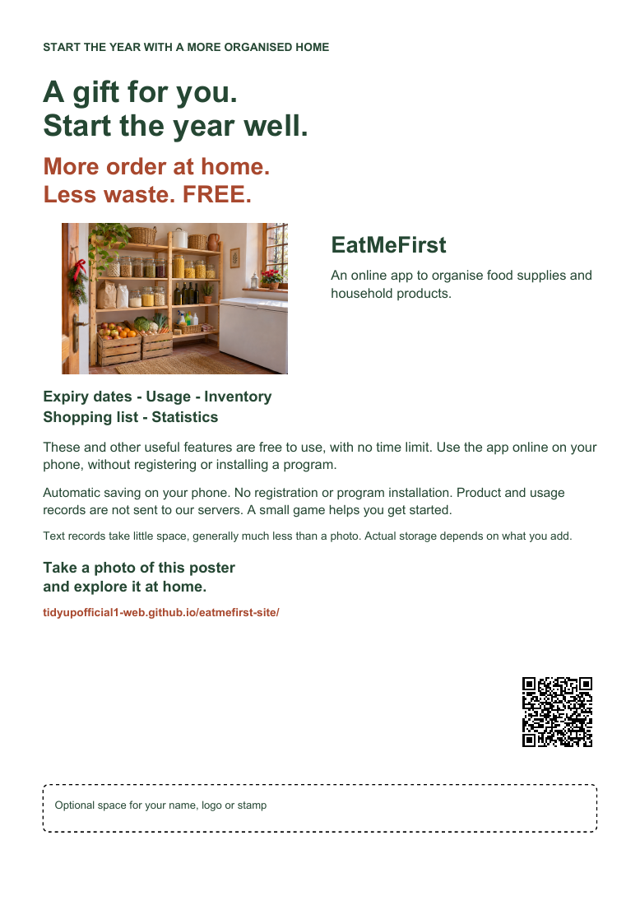

A New Year message ready to share.
The photo and drawing show household supplies, fruit crates and a chest freezer. Print a poster for your collection point or share an image on your website.
Download the four-page A4 PDFAll four versions are in this PDF. Select just the page you want when printing.

Black and white - space for your logo
Download this imageColour - no logo
Download this image
Colour - space for your logo
Download this imageA message for your members
Download the textThis page does not send messages. You choose where and with whom to share them.
Start on your phone
EatMeFirst is easy to read on a phone screen. Your camera can scan product barcodes while you put your shopping away. It also works on a PC, where you can enter products manually, even without a barcode.
Looking at the website on a computer? Open your phone’s camera as if taking a photo and point it at the QR code. You do not need to take a photo: tap the link when it appears. Already on your phone? Tap the link to open the website.